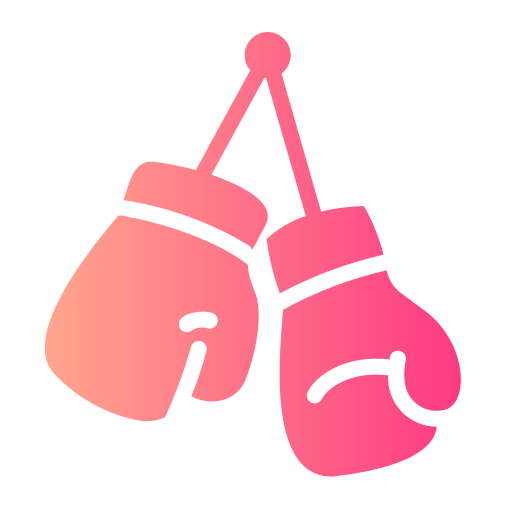

<nav x-data="{ mobileMenuIsOpen: false }" @click.away="mobileMenuIsOpen = false"
    class="flex items-center justify-between border-b border-slate-300 px-6 py-4 bg-[#1B1F23]"
    aria-label="penguin ui menu">
    <!-- Brand Logo -->
    <a href="index.html" class="text-2xl font-bold text-white flex">
        
        <span class="text-3xl">UF<span class="text-pink-700 text-3xl ">CW</span>eb</span>

    </a>
    <!-- Desktop Menu -->
    <ul class="h-[10vh] hidden items-center gap-4 md:flex">
        <li><a href="index.html"
                class=" text-2xl font-bold text-pink-700 underline-offset-2 hover:text-pink-700 focus:outline-none focus:underline"
                aria-current="page">Home</a></li>
        <li><a href="calendrier.html"
                class=" text-2xl font-medium text-slate-700 underline-offset-2 hover:text-pink-700 focus:outline-none focus:underline ">Calendrier</a>
        </li>
        <li><a href="combattant.html"
                class=" text-2xl font-medium text-slate-700 underline-offset-2 hover:text-pink-700 focus:outline-none focus:underline ">Combattants</a>
        </li>
        <li><a href="contact.html"
                class=" text-2xl font-medium text-slate-700 underline-offset-2 hover:text-pink-700 focus:outline-none focus:underline ">Contact</a>
        </li>
    </ul>
    <!-- Mobile Menu Button -->
    <button @click="mobileMenuIsOpen = !mobileMenuIsOpen" :aria-expanded="mobileMenuIsOpen"
        :class="mobileMenuIsOpen ? 'fixed top-6 right-6 z-20' : null" type="button" class="flex text-white  md:hidden"
        aria-label="mobile menu" aria-controls="mobileMenu">
        <svg x-cloak x-show="!mobileMenuIsOpen" xmlns="http://www.w3.org/2000/svg" fill="none" aria-hidden="true"
            viewBox="0 0 24 24" stroke-width="2" stroke="currentColor" class="size-6">
            <path stroke-linecap="round" stroke-linejoin="round" d="M3.75 6.75h16.5M3.75 12h16.5m-16.5 5.25h16.5" />
        </svg>
        <svg x-cloak x-show="mobileMenuIsOpen" xmlns="http://www.w3.org/2000/svg" fill="none" aria-hidden="true"
            viewBox="0 0 24 24" stroke-width="2" stroke="currentColor" class="size-6">
            <path stroke-linecap="round" stroke-linejoin="round" d="M6 18 18 6M6 6l12 12" />
        </svg>
    </button>
    <!-- Mobile Menu -->
    <ul x-cloak x-show="mobileMenuIsOpen"
        x-transition:enter="transition motion-reduce:transition-none ease-out duration-300"
        x-transition:enter-start="-translate-y-full" x-transition:enter-end="translate-y-0"
        x-transition:leave="transition motion-reduce:transition-none ease-out duration-300"
        x-transition:leave-start="translate-y-0" x-transition:leave-end="-translate-y-full" id="mobileMenu"
        class="fixed max-h-svh overflow-y-auto inset-x-0 top-0 z-10 flex flex-col divide-y divide-slate-300 rounded-b-xl border-b border-slate-300 bg-[#1B1F23] px-6 pb-6 pt-20 md:hidden">
        <li class="py-4"><a href="index.html" class="w-full text-lg font-bold text-pink-700 focus:underline "
                aria-current="page">Home</a></li>
        <li class="py-4"><a href="combattant.html"
                class="w-full text-lg font-medium text-pink-700 focus:underline ">Combattants</a></li>
        <li class="py-4"><a href="calendrier.html"
                class="w-full text-lg font-medium text-pink-700 focus:underline ">Calendrier</a></li>
        <li class="py-4"><a href="contact.html"
                class="w-full text-lg font-medium text-pink-700 focus:underline ">Contact</a></li>
    </ul>
</nav>